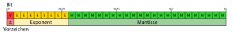

MM U00.1. Sistemas de numeracion
0.1. Sistemas de numeración¶
Los sistemas de numeración permiten representar cantidades usando símbolos y reglas. En informática son especialmente importantes porque los ordenadores almacenan y procesan información mediante bits, pero las personas solemos trabajar en decimal y también usamos bases compactas como octal y hexadecimal.
Comprender estos sistemas ayuda a interpretar direcciones de memoria, colores web, permisos, máscaras, valores de bajo nivel, formatos de datos y errores de representación numérica.
Objetivos de aprendizaje¶
- Comprender qué es un sistema de numeración posicional.
- Aplicar el teorema fundamental de la numeración.
- Convertir números entre base 10, base 2, base 8 y base 16.
- Realizar conversiones con parte fraccionaria.
- Representar números negativos con signo y magnitud, complemento a 1, complemento a 2 y notación sesgada.
- Interpretar el formato básico de coma flotante.
1. Sistemas de numeración¶
Un sistema de numeración es un conjunto de símbolos y reglas que permiten representar números. En informática se usan sobre todo sistemas posicionales, donde el valor de cada cifra depende de dos cosas:
- El símbolo usado.
- La posición que ocupa dentro del número.
Por ejemplo, en 345₁₀, el 3 no vale 3, sino 300, porque está en la posición de las centenas.
1.1. Base de un sistema¶
La base indica cuántos símbolos diferentes se usan en un sistema de numeración posicional.
| Sistema | Base | Símbolos | Uso habitual |
|---|---|---|---|
| Decimal | 10 | 0, 1, 2, 3, 4, 5, 6, 7, 8, 9 | Uso cotidiano. |
| Binario | 2 | 0, 1 | Representación interna en informática. |
| Octal | 8 | 0, 1, 2, 3, 4, 5, 6, 7 | Forma compacta relacionada con grupos de 3 bits. |
| Hexadecimal | 16 | 0-9, A, B, C, D, E, F | Forma compacta relacionada con grupos de 4 bits. |
En hexadecimal, las letras representan valores mayores que 9:
| Hexadecimal | Decimal |
|---|---|
| A | 10 |
| B | 11 |
| C | 12 |
| D | 13 |
| E | 14 |
| F | 15 |
1.2. Sistemas posicionales y no posicionales¶
En un sistema posicional, la posición cambia el valor de la cifra. En 111₂, cada 1 vale algo distinto:
En un sistema no posicional, como el sistema romano, el valor depende de reglas de combinación, pero no de potencias de una base de la misma forma que en decimal o binario.
2. Teorema fundamental de la numeración¶
El teorema fundamental de la numeración explica cómo se interpreta cualquier número escrito en una base.
En un sistema posicional de base
b, cada cifra multiplica a una potencia deb. Las cifras situadas a la izquierda de la coma usan potencias positivas o cero, y las cifras situadas a la derecha usan potencias negativas.
2.1. Forma general¶
Un número en base b puede escribirse así:
Su valor es:
Cada cifra debe cumplir:
Por eso en binario solo existen 0 y 1, en octal no existe el dígito 8, y en hexadecimal se usan letras para representar los valores de 10 a 15.
2.2. Ejemplos¶
3. Conversión desde cualquier base a decimal¶
Para pasar de una base cualquiera a decimal se aplica directamente el teorema fundamental de la numeración.
3.1. Binario a decimal¶
3.2. Octal a decimal¶
3.3. Hexadecimal a decimal¶
3.4. Método de Horner¶
El método de Horner permite convertir de forma ordenada leyendo las cifras de izquierda a derecha.
Ejemplo con 101101₂:
4. Conversión de decimal a otras bases¶
Para convertir la parte entera de un número decimal a otra base se usan divisiones sucesivas entre la base de destino. Los restos se leen desde el último hasta el primero.
4.1. Decimal a binario¶
Ejemplo: convertir 45₁₀ a binario.
45 ÷ 2 = 22 resto 1
22 ÷ 2 = 11 resto 0
11 ÷ 2 = 5 resto 1
5 ÷ 2 = 2 resto 1
2 ÷ 2 = 1 resto 0
1 ÷ 2 = 0 resto 1
Lectura de restos de abajo hacia arriba:
4.2. Decimal a octal¶
Ejemplo: convertir 469₁₀ a octal.
Resultado:
4.3. Decimal a hexadecimal¶
Ejemplo: convertir 255₁₀ a hexadecimal.
Resultado:
5. Conversiones entre binario, octal y hexadecimal¶
Octal y hexadecimal se usan mucho en informática porque se relacionan directamente con el binario:
- Un dígito octal equivale a 3 bits.
- Un dígito hexadecimal equivale a 4 bits.

5.1. Binario a octal¶
Se agrupan los bits de tres en tres desde la derecha.
Resultado:
5.2. Octal a binario¶
Cada cifra octal se sustituye por tres bits.
Resultado:
5.3. Binario a hexadecimal¶
Se agrupan los bits de cuatro en cuatro desde la derecha.
Resultado:
5.4. Hexadecimal a binario¶
Cada cifra hexadecimal se sustituye por cuatro bits.
Resultado:
Los ceros iniciales pueden omitirse si no se necesita una longitud fija:
6. Conversiones con parte fraccionaria¶
Los números con parte fraccionaria también pueden representarse en distintas bases. La parte situada a la derecha de la coma usa potencias negativas de la base.
6.1. De binario fraccionario a decimal¶
Ejemplo:
6.2. De decimal fraccionario a binario¶
Para convertir la parte fraccionaria decimal a binario se multiplica repetidamente por 2. La parte entera de cada resultado se convierte en el siguiente bit.
Ejemplo: convertir 0,625₁₀ a binario.
Resultado:
6.3. Conversión mixta con parte entera y fraccionaria¶
Ejemplo: convertir 13,25₁₀ a binario.
Primero convertimos la parte entera:
Después convertimos la parte fraccionaria:
Resultado:
6.4. Fracciones que no terminan¶
No todas las fracciones tienen una representación finita en todas las bases. Por ejemplo, 0,1₁₀ no puede representarse de forma exacta con un número finito de bits en binario.
Esto explica por qué algunos cálculos con decimales en los ordenadores pueden producir pequeños errores de redondeo.
6.5. Conversión de fracciones en octal y hexadecimal¶
El procedimiento es el mismo, pero multiplicando por la base de destino.
Ejemplo: convertir 0,625₁₀ a octal.
Resultado:
Ejemplo: convertir 0,625₁₀ a hexadecimal.
Resultado:
7. Representación de números negativos¶
Un ordenador trabaja con una cantidad fija de bits. Por eso, para representar números negativos, hay que decidir cómo interpretar esos bits.
En los ejemplos siguientes se usarán 8 bits para que las representaciones sean fáciles de leer.
7.1. Signo y magnitud¶
En signo y magnitud, el primer bit indica el signo:
0representa positivo.1representa negativo.
El resto de bits guarda la magnitud.
Ejemplo con 8 bits:
Ventaja:
- Es fácil de entender.
Problemas:
- Existen dos ceros:
00000000y10000000. - La suma y la resta son más incómodas para el hardware.
7.2. Complemento a 1¶
En complemento a 1, un número negativo se obtiene invirtiendo todos los bits del número positivo.
Ejemplo con 8 bits:
Ventajas:
- Obtener el negativo es sencillo.
Problemas:
- También existen dos ceros:
- Algunas sumas necesitan tratar el acarreo final de forma especial.
7.3. Complemento a 2¶
El complemento a 2 es el método más usado para representar enteros con signo.
Para obtener el negativo de un número:
- Se escribe el número positivo en binario.
- Se invierten todos los bits.
- Se suma 1.
Ejemplo con 8 bits:
Ventajas:
- Solo existe un cero.
- La suma y la resta funcionan de forma natural con el mismo circuito.
- Es el sistema habitual en procesadores modernos.
7.4. Rango en complemento a 2¶
Con n bits, el rango de complemento a 2 es:
Con 8 bits:
La asimetría aparece porque el cero ocupa una combinación y no existe un +128 con 8 bits.
7.5. Suma en complemento a 2¶
Ejemplo: 25 + (-13) con 8 bits.
Se descarta el acarreo que queda fuera de los 8 bits:
7.6. Extensión de signo¶
Cuando se aumenta el número de bits, hay que conservar el signo. Para ello se copia el bit más significativo.
Ejemplo: pasar -13 de 8 bits a 16 bits.
Si el número es positivo, se rellenan ceros a la izquierda.
7.7. Desbordamiento¶
Hay desbordamiento cuando el resultado real no cabe en los bits disponibles.
En complemento a 2, al sumar dos números del mismo signo, hay desbordamiento si el resultado aparece con signo contrario.
Ejemplo con 8 bits:
El resultado matemático sería 128, pero no cabe en 8 bits con signo.
8. Notación sesgada¶
La notación sesgada representa números usando un desplazamiento fijo llamado sesgo o bias.
La idea es guardar el valor así:
Y recuperar el valor real así:
8.1. Ejemplo con sesgo 127¶
La notación sesgada se usa en el exponente de IEEE 754 de precisión simple, donde el sesgo es 127.
Ejemplo:
Si se lee el exponente almacenado 10000010₂:
8.2. Por qué se usa¶
La notación sesgada permite guardar exponentes negativos y positivos usando un campo binario sin signo. Es útil cuando se quiere ordenar o comparar valores de forma más cómoda a nivel de hardware.
9. Coma fija y coma flotante¶
Los ordenadores también necesitan representar números con decimales. Hay dos enfoques importantes: coma fija y coma flotante.
9.1. Coma fija¶
En coma fija, se decide de antemano cuántos bits pertenecen a la parte entera y cuántos a la parte fraccionaria.
Ejemplo con 8 bits, usando 4 bits para la parte entera y 4 para la fraccionaria:
Interpretación:
Ventajas:
- Es sencilla y rápida.
- Es útil cuando se conoce bien el rango de valores.
Limitaciones:
- Tiene poco rango si se reserva mucha parte fraccionaria.
- Tiene poca precisión fraccionaria si se reserva mucha parte entera.
9.2. Coma flotante¶
La coma flotante permite representar números muy grandes y muy pequeños usando una idea parecida a la notación científica.
En decimal podemos escribir:
En binario se usa una forma similar:
La coma “flota” porque se mueve para dejar el número normalizado.
10. IEEE 754 de precisión simple¶
El estándar IEEE 754 define formatos habituales para representar números en coma flotante. En precisión simple se usan 32 bits.

10.1. Campos principales¶
| Campo | Bits | Función |
|---|---|---|
| Signo | 1 | Indica si el número es positivo o negativo. |
| Exponente | 8 | Guarda el exponente usando notación sesgada con sesgo 127. |
| Fracción o mantisa | 23 | Guarda la parte significativa del número normalizado. |
Para números normalizados, el valor se interpreta así:
El 1 inicial de la mantisa no se almacena porque se supone en los números normalizados. Por eso se llama bit implícito.
10.2. Conversión de 13,25 a IEEE 754¶
Paso 1. Convertir a binario:
Paso 2. Normalizar:
Paso 3. Calcular el exponente sesgado:
Paso 4. Obtener signo y mantisa:
Resultado:
En hexadecimal:
10.3. Casos especiales¶
IEEE 754 reserva algunas combinaciones para casos especiales.
| Exponente | Mantisa | Significado |
|---|---|---|
| Todo a 0 | Todo a 0 | Cero positivo o negativo. |
| Todo a 0 | Distinta de 0 | Número subnormal. |
| Todo a 1 | Todo a 0 | Infinito positivo o negativo. |
| Todo a 1 | Distinta de 0 | NaN, valor no numérico. |
10.4. Errores de redondeo¶
La coma flotante no representa todos los decimales de forma exacta. Por ejemplo, 0,1₁₀ no tiene una representación binaria finita.
Por eso, en programación, expresiones aparentemente sencillas pueden producir resultados con pequeños errores.
Ejemplo conceptual:
En cálculos con coma flotante se suele comparar usando una tolerancia, no igualdad exacta.
11. Aritmética binaria básica¶
Aunque la unidad se centra en representación y conversión, conviene conocer las reglas básicas de operación binaria.
11.1. Suma binaria¶
Reglas:
| Operación | Resultado |
|---|---|
| 0 + 0 | 0 |
| 0 + 1 | 1 |
| 1 + 0 | 1 |
| 1 + 1 | 10 |
Ejemplo:
11.2. Resta binaria¶
Cuando no se puede restar directamente, se pide préstamo a la columna de la izquierda.
Ejemplo:
11.3. Multiplicación binaria¶
La multiplicación binaria es similar a la decimal, pero solo se multiplica por 0 o por 1.
12. Aplicaciones en informática¶
Los sistemas de numeración aparecen continuamente en informática:
- Binario: representación interna de datos, instrucciones, máscaras y registros.
- Octal: permisos en sistemas tipo Unix, como
755o644. - Hexadecimal: direcciones de memoria, colores web, volcados de datos y códigos de error.
- Complemento a 2: representación habitual de enteros con signo.
- Notación sesgada: exponentes en coma flotante.
- IEEE 754: representación de números reales aproximados en procesadores y lenguajes de programación.
Resumen final¶
- Un sistema de numeración posicional usa una base y potencias de esa base para dar valor a cada cifra.
- El teorema fundamental de la numeración permite interpretar cualquier número escrito en una base.
- Las conversiones enteras se realizan con divisiones sucesivas o aplicando potencias de la base.
- Las conversiones fraccionarias usan potencias negativas o multiplicaciones sucesivas por la base.
- Los negativos pueden representarse con signo y magnitud, complemento a 1, complemento a 2 o notación sesgada.
- La coma flotante representa valores reales aproximados mediante signo, exponente y mantisa.
Fuentes consultadas¶
- Knuth, D. E. The Art of Computer Programming, Vol. 2.
- Tanenbaum, A. S. Structured Computer Organization.
- IEEE 754-2019 - Standard for Floating-Point Arithmetic
- NIST - Prefixes for binary multiples
- Wikimedia Commons - Binary to Hexadecimal or Decimal
- Wikimedia Commons - IEEE 754 single precision
{kind=link}
{kind=link}
Fuentes de imágenes¶
- Binary to Hexadecimal or Decimal. Fuente: Wikimedia Commons.
- IEEE 754 single precision. Fuente: Wikimedia Commons.
Fecha de actualización: 30/04/2026